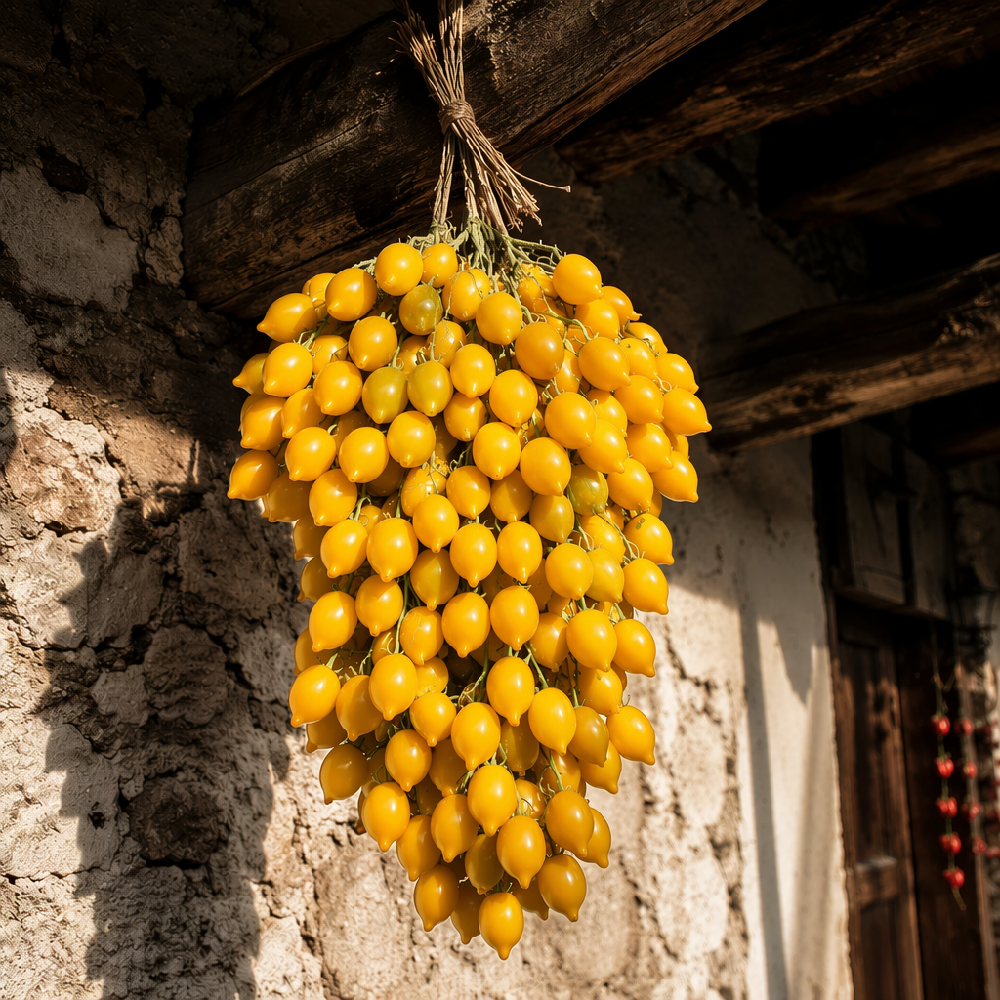

Pomodorino del Piennolo del Vesuvio е един от най-емблематичните традиционни сортове домати в Италия, отглеждан от векове по склоновете на вулкана Везувий в област Кампания. Благодарение на уникалното съчетание от вулканични почви, средиземноморски климат и местни земеделски традиции, сортът развива отличителни качества, които през 2009 г. му носят европейско защитено наименование за произход (PDO).

🌿 Традиционният piennolo – домати, вързани на гроздове за дългосрочно съхранение
Освен добре познатата червена форма, съществува и по-рядко срещана жълта разновидност — Pomodorino Giallo del Piennolo, която се отличава с по-мек и сладък вкус, по-ниска киселинност и е високо ценена в традиционната кухня на Южна Италия. И двете разновидности запазват характерните особености на сорта — дребни плодове, високо съдържание на сухо вещество, богат аромат и отлична съхраняемост.
Една от най-забележителните особености на сорта е традиционният начин на съхранение, известен като piennolo. След прибирането на реколтата доматите се връзват на големи гроздове и се окачват в сухи, сенчести и добре проветриви помещения. Благодарение на по-дебелата си кожица, по-ниското съдържание на свободна вода и високата концентрация на сухо вещество плодовете могат да останат свежи в продължение на няколко месеца без необходимост от хладилно съхранение.
Тази вековна практика позволява доматите да се използват през цялата зима и е една от причините сортът да се е превърнал в символ на устойчивото традиционно земеделие в района на Везувий.
Растенията развиват дълбока коренова система, използват ефективно наличната почвена влага и понасят по-добре топлинния стрес в сравнение с много съвременни сортове. Плодовете са богати на естествени захари, витамин C, фенолни съединения и ароматни вещества, което ги прави отличен избор както за прясна консумация, така и за приготвяне на традиционни италиански сосове, консервиране, сушене и гурме специалитети.
Специално внимание е отделено и на успешното му изпитване при полски условия в района на Велико Търново през 2026 г., което показва добрия му потенциал за отглеждане и в България. Това потвърждава, че древният генетичен ресурс може да намери нов дом и да допринесе за местното биологично разнообразие.
Pomodorino del Piennolo — не само вкус от миналото, но и мост към устойчивото земеделие на бъдещето. 🍅